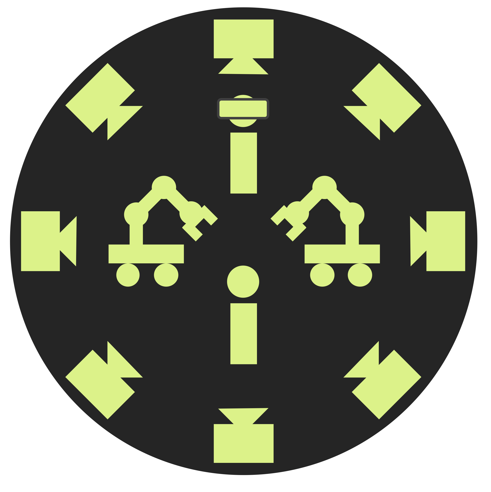
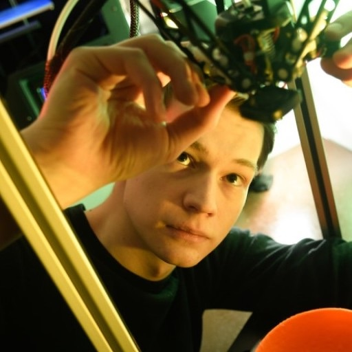

ABOUT TARS
FOUNDERS AND DIRECTORS
At the Terascale All-sensing Research Studio (TARS) at Wright State University, Dayton, OH, we perform research in human-driven artificial intelligence using capture and analysis of dense multi-person interactions in online and real-world environments. Our research spans computer vision, computer graphics, deep learning, human-robot interaction, human-machine teaming, virtual reality, and human-computer interaction.
We look for graduate and undergraduate students with excellent academic credentials, substantial project work in computer science and AI (at the graduate level) and a strong drive to perform research with us.
SELECTED PUBLICATIONS
E Ibragimov, NK Banerjee, S Banerjee, and A Shivakumar
Computer Animation and Virtual Worlds, 2026
Cross-system forecasting-based user authentication for virtual reality (VR)
M Li, N Banerjee, and S Banerjee
Computers & Graphics, 2026
Descriptor: Real-World 3D Object, Human Giver, Human Receiver, and Sampled Robot Grasps Dataset (HOH-Grasps)
X Song, J Cox, S Banerjee, and NK Banerjee
IEEE Data Descriptions, 2026
Dine in or take out dataset: user behavior in an interactive virtual reality cafe
E Ibragimov, NK Banerjee, S Banerjee, and A Shivakumar
Data in Brief, 2026
Dataset of RGB-D images of object collections from multiple viewpoints with aligned high-resolution 3D models of objects
X Song, M Li, S Banerjee, and NK Banerjee
Data in Brief, 2026
Pix2Repair: Implicit Shape Restoration from Images
N Lamb, X Song, S Banerjee, and NK Banerjee
Irish Machine Vision and Image Processing Conference, 2026
Real or fake motion: protecting virtual reality (VR) behavioral authentication systems against motion forecasting attacks
M Li, NK Banerjee, and S Banerjee
Frontiers in Virtual Reality, 2026
Dataset of perceptions of waiting in a virtual reality (VR) doctor's office receptionist queue with and without notifications on the reason for a delay
E Ibragimov, NK Banerjee, S Banerjee, and A Shivakumar
Data in Brief, 2026
Descriptor: Line Cutting While Waiting in Line at a Doctor’s Office in Virtual Reality Dataset (LC-WAIT)
E Ibragimov, NK Banerjee, S Banerjee, and A Shivakumar
IEEE Data Descriptions, 2026
Perception of Gendered Voice and Expressed Apology in Warehouse Robots
A Megyeri, M Kyrarini, NK Banerjee, and S Banerjee
IEEE International Conference on Advanced Robotics and its Social Impacts (ARSO), 2026
Robot-to-Human Object Handover Informed Using Human Object Transfer
X Song, A Megyeri, S Banerjee, and NK Banerjee
IEEE International Conference on Advanced Robotics and its Social Impacts (ARSO), 2026
Understanding how loneliness relates to user behavior in an interactive virtual reality cafe
E Ibragimov, NK Banerjee, S Banerjee, and A Shivakumar
Frontiers in Virtual Reality, 2026
Safety and Naturalness Perceptions of Robot-to-Human Handovers Performed by Data-Driven Robotic Mimicry of Human Givers
A Megyeri, N Wiederhold, A Liu, S Banerjee, and NK Banerjee
IEEE International Conference on Robotics and Automation (ICRA), 2025
VitaMaze: A VR Exergame Driven using Feedback from Physiological Sensors
E Matzek, A Megyeri, T Yankee, NK Banerjee, and S Banerjee
IEEE International Conference on Artificial Intelligence and eXtended and Virtual Reality (AIxVR), 2025
HILO: A Large-Scale Heterogeneous Object Dataset for Benchmarking Robotic Grasping Approaches
X Song, S Banerjee, and NK Banerjee
International Conference on Automation, Robotics, and Applications (ICARA), 2025
Understanding the Strength of Self-Identified Gender, Country, and Labor Sector on the Perception of Robots in Industrial Environments
A Liu, NK Banerjee, and S Banerjee
International Conference on Automation, Robotics, and Applications (ICARA), 2025
Dataset of worker perceptions of workforce robotics regarding safety, independence, job security, and privacy
YA Liu, G Kaur, NK Banerjee, and S Banerjee
Data in Brief, 2025
Multimodal cross-system virtual reality (VR) ball throwing dataset for VR biometrics
M Li, NK Banerjee, and S Banerjee
Data in Brief, 2025
Predicting 3D motion from 2D video for behavior-based VR biometrics
M Li, NK Banerjee, and S Banerjee
IEEE International Conference on Artificial Intelligence and eXtended and Virtual Reality (AIxVR), 2025
Cross-System Virtual Reality (VR) Authentication Using Transformer-Based Trajectory Forecasting
M Li, NK Banerjee, and S Banerjee
International conference on virtual reality and mixed reality, 2025
Motion forecasting attacks on behavioral biometric authentication systems in virtual reality
M Li, A Shivakumar, NK Banerjee, and S Banerjee
Proceedings of the ACM Symposium on Virtual Reality Software and Technology, 2025
Analysis of Pre-Handover Peak Speed Timing and Patterns for Human Givers and Receivers
A Megyeri, S Banerjee, M Kyrarini, and NK Banerjee
IEEE International Conference on Robot and Human Interactive Communication (RO-MAN), 2025
HI-Grasp: Human-Inspired Grasp Network for Intuitive and Stable Robotic Grasp
X Song, A Megyeri, N Wiederhold, S Banerjee, and NK Banerjee
IEEE International Conference on Robot and Human Interactive Communication (RO-MAN), 2025
What should an industrial robot record? Understanding worker perceptions toward privacy
T Yankee, M Kyrarini, NK Banerjee, and S Banerjee
IEEE International Conference on Robot and Human Interactive Communication (RO-MAN), 2025
Strategic AI: Securing Cyberspace through Game-Theoretic Intelligence
AA Hossain, D Ahner, M Larkin, and N Banerjee
NAECON 2025-IEEE National Aerospace and Electronics Conference, 2025
Studying Disagreement in Grasp Intentions of Givers and Receivers Engaging in Human-Human Handover
N Wiederhold, S Banerjee, and NK Banerjee
IEEE International Conference on Robot and Human Interactive Communication (RO-MAN), 2025
Descriptor: Geometric Breaks Dataset (GB)
N Lamb, S Banerjee, and NK Banerjee
IEEE Data Descriptions, 2025
VRcabulary: A VR Environment for Reinforced Language Learning via Multi-Modular Design
M White, NK Banerjee, and S Banerjee
IEEE International Conference on Artificial Intelligence and eXtended and Virtual Reality (AIxVR), 2024
Using motion forecasting for behavior-based virtual reality (vr) authentication
M Li, NK Banerjee, and S Banerjee
IEEE International Conference on Artificial Intelligence and eXtended and Virtual Reality (AIxVR), 2024
Classesinvr: An immersive vr-based classroom
J Minnekanti, NK Banerjee, and S Banerjee
IEEE International Conference on Artificial Intelligence and eXtended and Virtual Reality (AIxVR), 2024
Vr-hand-in-hand: Using virtual reality (vr) hand tracking for hand-object data annotation
M Duver, N Wiederhold, M Kyrarini, S Banerjee, and NK Banerjee
IEEE International Conference on Artificial Intelligence and eXtended and Virtual Reality (AIxVR), 2024
Evaluating the effectiveness of vr classrooms as a replacement for traditional asynchronous video-based learning environments
M White, A Kupin, S Inzerillo, NK Banerjee, and S Banerjee
IEEE International Conference on Artificial Intelligence and eXtended and Virtual Reality (AIxVR), 2024
VRmonic: A VR piano playing form trainer
E Matzek, T Yankee, O Kohler, T Lipke-Perry, NK Banerjee, and S Banerjee
IEEE International Conference on Artificial Intelligence and eXtended and Virtual Reality (AIxVR), 2024
Evaluating deep networks for detecting user familiarity with vr from hand interactions
M Li, N Zafar, NK Banerjee, and S Banerjee
IEEE International Conference on Artificial Intelligence and eXtended and Virtual Reality (AIxVR), 2024
System architecture for VR yoga therapy platform with 6-DoF whole-body avatar tracking
AA Kupin, S Banerjee, N Banerjee, SH Roy, JC Kline, and B Shiwani
IEEE International Conference on Artificial Intelligence and eXtended and Virtual Reality (AIxVR), 2024
Analyzing perceptions on barriers to safety in the workforce and expectations on human and robotic assistance
A Liu, NK Banerjee, and S Banerjee
IEEE International Conference on Robot and Human Interactive Communication (ROMAN), 2024
GraspPC: Generating diverse hand grasp point clouds on objects
A Megyeri, N Wiederhold, M Kyrarini, S Banerjee, and NK Banerjee
IEEE International Conference on Robot and Human Interactive Communication (ROMAN), 2024
Using human-human handover data to analyze giver and receiver timing relationships during the pre-handover phase
A Megyeri, S Banerjee, M Kyrarini, and NK Banerjee
IEEE International Conference on Robot and Human Interactive Communication (ROMAN), 2024
Reinforcement-learning based robotic assembly of fractured objects using visual and tactile information
X Song, N Lamb, S Banerjee, and NK Banerjee
International Conference on Automation, Robotics and Applications (ICARA), 2023
Studying worker perceptions on safety, autonomy, and job security in human-robot collaboration
G Kaur, S Banerjee, and NK Banerjee
International Conference on Automation, Robotics and Applications (ICARA), 2023
HOH: Markerless multimodal human-object-human handover dataset with large object count
N Wiederhold, A Megyeri, D Paris, S Banerjee, and NK Banerjee
Advances in Neural Information Processing Systems, 2023
Fantastic breaks: A dataset of paired 3d scans of real-world broken objects and their complete counterparts
N Lamb, C Palmer, B Molloy, S Banerjee, and NK Banerjee
IEEE/CVF Conference on Computer Vision and Pattern Recognition (CVPR), 2023
Perception of human-robot collaboration across countries and job domains
G Kaur, S Banerjee, and NK Banerjee
IEEE International Conference on Advanced Robotics and Its Social Impacts (ARSO), 2023
Studying how object handoff orientations relate to subject preferences on handover
N Wiederhold, M Li, N Lamb, D Paris, A Tulskie, S Banerjee, and NK Banerjee
IEEE International Conference on Advanced Robotics and Its Social Impacts (ARSO), 2023
Understanding Agreement in Giver and Receiver Intentions on Grasp in Human-Human Handover
N Wiederhold, S Banerjee, and NK Banerjee
Seventh IEEE International Conference on Robotic Computing (IRC), 2023
Mov-slam: Using motion vectors for real-time single-cpu visual slam
RN Turner, NK Banerjee, and S Banerjee
Seventh IEEE International Conference on Robotic Computing (IRC), 2023
Deepjoin: Learning a joint occupancy, signed distance, and normal field function for shape repair
N Lamb, S Banerjee, and NK Banerjee
ACM Transactions on Graphics (TOG), 2022
Using external video to attack behavior-based security mechanisms in virtual reality (vr)
R Miller, NK Banerjee, and S Banerjee
IEEE conference on virtual reality and 3D user interfaces abstracts and workshops (VRW), 2022
Combining real-world constraints on user behavior with deep neural networks for virtual reality (vr) biometrics
R Miller, NK Banerjee, and S Banerjee
IEEE conference on virtual reality and 3D user interfaces (VR), 2022
Deepmend: Learning occupancy functions to represent shape for repair
N Lamb, S Banerjee, and NK Banerjee
European conference on computer vision, 2022
Temporal effects in motion behavior for virtual reality (vr) biometrics
R Miller, NK Banerjee, and S Banerjee
IEEE conference on virtual reality and 3D user interfaces (VR), 2022
Using Video Motion Vectors for Structure from Motion 3D Reconstruction.
RN Turner, NK Banerjee, and S Banerjee
SIGMAP, 2022
Post-lift analysis of thermal imprint for weight and effort detection
A Dykeman, J Judge, PRK Prosun, G Kaur, O Talmage, S Banerjee, and NK Banerjee
IEEE/ACM Conference on Connected Health: Applications, Systems and Engineering Technologies (CHASE), 2022
Predicting weight and strenuousness from high-speed videos of subjects attempting lift
J Judge, PRK Prosun, O Talmage, A Dykeman, S Banerjee, and NK Banerjee
IEEE/ACM Conference on Connected Health: Applications, Systems and Engineering Technologies (CHASE), 2022
Mendnet: Restoration of fractured shapes using learned occupancy functions
N Lamb, S Banerjee, and NK Banerjee
Computer Graphics Forum, 2022
Using siamese neural networks to perform cross-system behavioral authentication in virtual reality
R Miller, NK Banerjee, and S Banerjee
IEEE Virtual Reality and 3D User Interfaces (VR), 2021
Using learned visual and geometric features to retrieve complete 3d proxies for broken objects
N Lamb, N Wiederhold, B Lamb, S Banerjee, and NK Banerjee
Proceedings of the Annual ACM Symposium on Computational Fabrication, 2021
Within-system and cross-system behavior-based biometric authentication in virtual reality
R Miller, NK Banerjee, and S Banerjee
IEEE conference on virtual reality and 3D user interfaces abstracts and workshops (VRW), 2020
Automatic material classification using thermal finger impression
J Gately, Y Liang, MK Wright, NK Banerjee, S Banerjee, and S Dey
International Conference on Multimedia Modeling, 2019
Predicting Human Grasp Locations on Cup Handles by Using Deep Neural Networks to Infer Heat Signatures from Depth Data
Y Jiang, S Banerjee, and NK Banerjee
IEEE International Conference on Multimedia & Expo Workshops (ICMEW), 2019
Realtime behavior-based continual authentication of users in virtual reality environments
R Miller, A Ajit, NK Banerjee, and S Banerjee
IEEE International Conference on Artificial Intelligence and Virtual Reality (AIVR), 2019
Combining pairwise feature matches from device trajectories for biometric authentication in virtual reality environments
A Ajit, NK Banerjee, and S Banerjee
IEEE International Conference on Artificial Intelligence and Virtual Reality (AIVR), 2019
Predicting if older adults perform cognitive tasks using body joint movements from RGB-D videos
J Ryan, S Inzerillo, J Helmick, A Boolani, NK Banerjee, and S Banerjee
International Conference on EHealth, Telemedicine, and Social Medicine, 2019
Automated reconstruction of smoothly joining 3D printed restorations to fix broken objects
N Lamb, S Banerjee, and NK Banerjee
Proceedings of the Annual ACM Symposium on Computational Fabrication, 2019
Comparison of Traditional and Constrained Recursive Clustering Approaches for Generating Optimal Census Block Group Clusters
D Gwinn, J Helmick, N Kholgade, and S Banerjee
Communications in Computer and Information Sciences, 2019
A virtual reality interface for interactions with spatiotemporal 3D data
H Quant, S Banerjee, and NK Banerjee
International Conference on Multimedia Modeling, 2018
Task-driven biometric authentication of users in virtual reality (VR) environments
A Kupin, B Moeller, Y Jiang, NK Banerjee, and S Banerjee
International conference on multimedia modeling, 2018
Spatiotemporal 3D models of aging fruit from multi-view time-lapse videos
L Guo, H Quant, N Lamb, B Lowit, S Banerjee, and NK Banerjee
International Conference on Multimedia Modeling, 2018
Programmatic 3D printing of a revolving camera track to automatically capture dense images for 3D scanning of objects
N Lamb, NK Banerjee, and S Banerjee
International Conference on Multimedia Modeling, 2018
When Will Breakfast be Ready: Temporal Prediction of Food Readiness Using Deep Convolutional Neural Networks on Thermal Videos
Y Jiang, M Luo, S Banerjee, and NK Banerjee
IEEE International Conference on Multimedia & Expo Workshops (ICMEW), 2018
User-independent detection of swipe pressure using a thermal camera for natural surface interaction
T Dunn, S Banerjee, and NK Banerjee
IEEE International Workshop on Multimedia Signal Processing (MMSP), 2018
Hardware synchronization of multiple Kinects and microphones for 3D audiovisual spatiotemporal data capture
Y Jiang, D Russell, T Godisart, NK Banerjee, and S Banerjee
IEEE International Conference on Multimedia and Expo (ICME), 2018
Optimal Estimation of Census Block Group Clusters to Improve the Computational Efficiency of Drive Time Calculations.
D Gwinn, J Helmick, NK Banerjee, and S Banerjee
GISTAM, 2018
Multi-camera microenvironment to capture multi-view time-lapse videos for 3D analysis of aging objects
L Guo, H Quant, N Lamb, B Lowit, NK Banerjee, and S Banerjee
International Conference on Multimedia Modeling, 2018
CNN-based non-contact detection of food level in bottles from RGB images
Y Jiang, E Schenck, S Kranz, S Banerjee, and NK Banerjee
International Conference on Multimedia Modeling, 2018
Water fixture identification in smart housing: A domain knowledge based case study
Y Gao, D Hou, N Banerjee, and S Banerjee
IEEE International Conference on Machine Learning and Applications (ICMLA), 2016
GPU acceleration of document similarity measures for automated bug triaging
T Dunn, NK Banerjee, and S Banerjee
IEEE International Symposium on Software Reliability Engineering Workshops (ISSREW), 2016
AWARDS
Best Paper Award at the 2025 International Conference on Virtual Reality and Mixed Reality (EuroXR)
Best Paper Award at 2024 IEEE International Conference on Artificial Intelligence & extended and Virtual Reality (AIxVR)
Best Demo Award at 2024 IEEE International Conference on Artificial Intelligence & extended and Virtual Reality (AIxVR)
Clarkson Technology Showcase & Competition, Audience Choice in Promising Tech Category, 2022
Best Student Paper Runner Up at 2022 IEEE/ACM International Conference on Connected Health: Applications, Systems and Engineering Technologies (CHASE)
Best Paper at 2022 International Conference on Signal Processing and Multimedia Applications (SIGMAP)
Best Paper Honorable Mention at 2022 IEEE Conference on Virtual Reality and 3D User Interfaces (IEEE VR)
Best Student Paper at 2019 International Conference on Artificial Intelligence & Virtual Reality (AIVR)
Best Paper Candidate at 2019 International Conference on Multimedia Modeling (MMM)
Top 5% Paper Award at 2018 Multimedia Signal Processing Workshop (MMSP)
DATASETS
- [IEEE Data Descriptions 2026] Descriptor: Real-World 3D Object, Human Giver, Human Receiver, and Sampled Robot Grasps Dataset (HOH-Grasps)
- [IEEE Data Descriptions 2026] Descriptor: Line Cutting While Waiting in Line at a Doctor's Office in Virtual Reality Dataset (LC-WAIT)
- [IEEE Data Descriptions 2026] Descriptor: Waiting in Line in Virtual Reality Dataset (WAIT)
- [Data in Brief 2026] Dine In or Take Out Dataset: User Behavior in an Interactive Virtual Reality Café
- [IEEE Data Descriptions 2025] Descriptor: Geometric Breaks Dataset (GB)
- [Data In Brief 2025] Dataset of Perceptions of Waiting in a Virtual Reality (VR) Doctor's Office Receptionist Queue With and Without Notifications on the Reason for a Delay
- [Data In Brief 2025] Multimodal Cross-System Virtual Reality (VR) Ball Throwing Dataset for VR Biometrics
- [Data In Brief 2025] Dataset of Worker Perceptions of Workforce Robotics Regarding Safety, Independence, Job Security, and Privacy
- [Data In Brief 2025] Dataset of Worker Perceptions of Workforce Robotics Regarding Safety, Independence, Job Security, and Privacy
- [ICARA 2025] HILO: A Large-Scale Heterogeneous Object Dataset for Benchmarking Robotic Grasping Approaches
- [CVPR 2023] Fantastic Breaks: A Dataset of Paired 3D Scans of Real-World Broken Objects and Their Complete Counterparts
- [NeurIPS 2023] HOH: Markerless Multimodal Human-Object-Human Handover Dataset with Large Object Count
PEOPLE
FACULTY
AFFILIATED FACULTY
Assistant Professor
Computer Science & Engineering
Wright State University
PhD STUDENTS

Computer Science & Engineering
Wright State University
Computer Science & Engineering
Wright State University
Computer Science & Engineering
Wright State University
Computer Science & Engineering
Wright State University
MS STUDENTS
Cybersecurity
Wright State University
Computer Science & Engineering
Wright State University
Computer Science & Engineering
Wright State University
ALUMNI
PhD
Computer Science
Clarkson University
Computer Science
Clarkson University

Computer Science
Clarkson University
Computer Science
Clarkson University
Computer Science
Clarkson University
Computer Science
Clarkson University
Computer Science
Clarkson University
Computer Science
Clarkson University
MS
Computer Science
Clarkson University
Computer Science
Clarkson University
Computer Science
Clarkson University
Computer Science
Clarkson University
Computer Science
Clarkson University
Computer Science
Clarkson University
Computer Science
Clarkson University
Computer Science
Clarkson University
Computer Science
Clarkson University
Computer Science & Engineering
Wright State University
Computer Science & Engineering
Wright State University
Copyright © Natasha Kholgade Banerjee. All rights reserved.